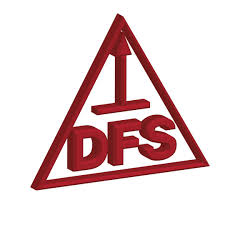

Bachiller con orientación en Informática
Institución: Instituto Don Francisco Scalabrini (DFS) — González Catán, provincia de Buenos Aires.
Educación secundaria completa con formación general más orientación específica en informática, que aportó una primera base en programación, manejo de herramientas ofimáticas y pensamiento lógico.
Período
Marzo 2003 - Diciembre 2007
Competencias adquiridas
- Fundamentos de lógica de programación y algoritmos
- Manejo avanzado de herramientas ofimáticas
- Nociones de hardware y mantenimiento de equipos
- Redacción, comprensión lectora y comunicación oral
- Trabajo en equipo y resolución de problemas
- Base en matemática, física y ciencias naturales
Imágenes de la institución
